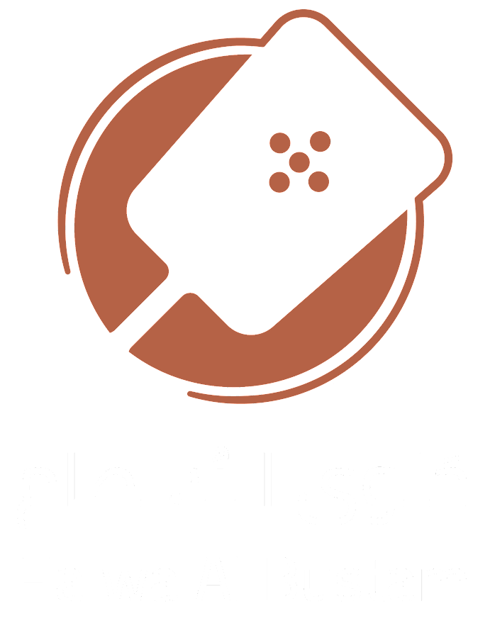

.
Josah For Omani Halwa
موقع يجمع مصانع الحلوى العمانية المتوفرة في سلطنة عمان والتي تقبل التوصيل الى جميع مناطق الخليج
حلوى البُسطام

حلوى البسطام من مصانع ولاية منح التي تأسست في عام ٢٠٢١
أنواع الحلوى المتوفرة لديهم
الحلوى الخاصة بالجوز
حلوى المكسرات
حلوى التمر بالنارجيل
حلوى السكر الأحمر العماني
موقع للطلب
إضغط هنا للوصول إلى موقع المحل
حلوى السليماني
حلوى السليماني من مصانع ولاية منح التي تأسست في عام ٢٠٠٤
أنواع الحلوى المتوفرة لديهم
الحلوى الخاصة
حلوى الدبس
حلوى التمر
حلوى السكر الأحمر العماني
حلوى حليب الجمل
موقع للطلب
اضغط هنا للتواصل معنا